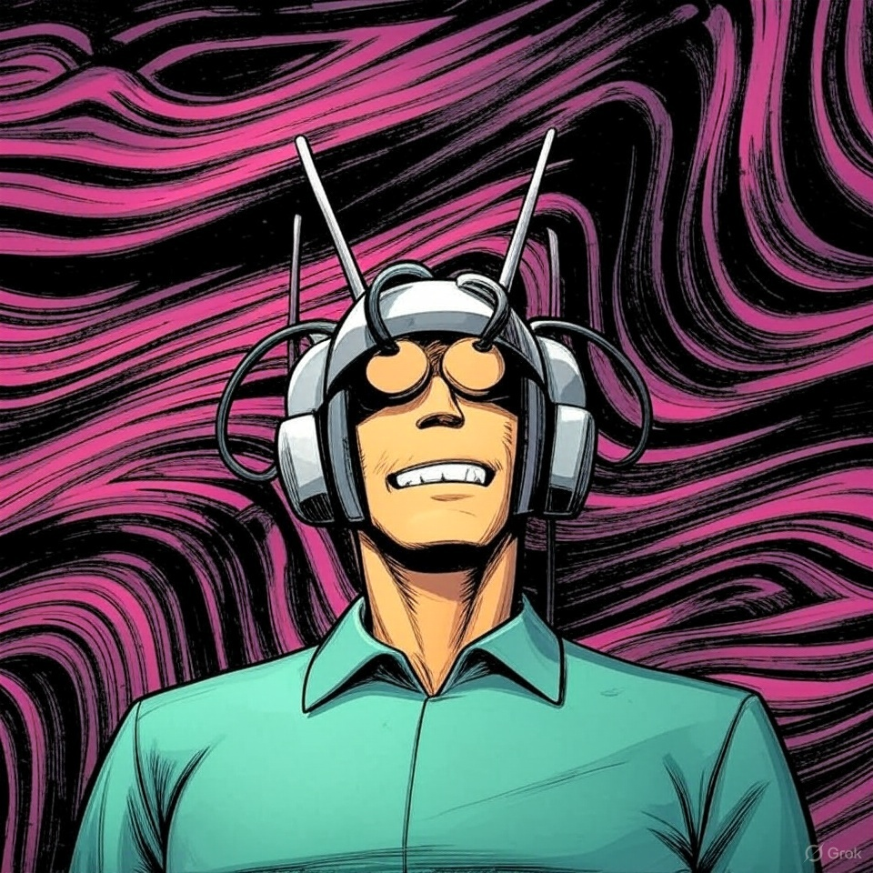

MK-ULTRA Psychic Defense
MK-ULTRA Psychic Defense Summary
MK-ULTRA Psychic Defense is a rogue-like tower defense game on Steam, released on December 2, 2024. In this psychedelic-themed game, you play as a young Ted Kaczynski, navigating the horrors of the CIA's MK-ULTRA program. The objective is to use unique, esoterically themed towers to defend your "mental maze" and protect your Kundalini energy spiral from waves of "mind goblins" and demonic entities. The game blends psychological and supernatural elements, with mechanics involving psychic powers and higher-dimensional energy. It has a distinctive, trippy aesthetic and an intriguing concept, though some players note minor issues with controls. Minimum system requirements include a 64-bit Windows 10, Intel i5 processor, and 8 GB RAM.
Development Details:
Engine: The game was built using the Godot Engine, an open-source, versatile game development platform known for its flexibility and lightweight framework, which allowed ZeroSequels to create a visually unique and mechanically robust experience tailored to the game's esoteric themes.
Art and Models: All 3D models and assets were crafted in Blender, a powerful open-source 3D creation suite. This enabled the team to design the game's trippy, psychedelic visuals, including the surreal "mental maze" environments and otherworldly entities, aligning with the MK-ULTRA-inspired narrative.
Localization: The game’s localization was handled using R1:Deepseek, an AI model that assisted in translating and adapting text content to ensure accessibility across different languages, maintaining the thematic integrity of the game’s psychological and mystical elements.
Scripting and Scene Creation: Certain scripts and game scenes were developed with the assistance of Claude Sonnet 3.7, an AI model that helped streamline the creation of specific game logic and scene setups. This likely contributed to efficiently prototyping and refining the rogue-like mechanics and tower interactions unique to the game.
Studio: As the inaugural project of ZeroSequels, MK-ULTRA Psychic Defense represents the studio’s vision to deliver innovative, narrative-driven games with unconventional themes. The use of open-source tools like Godot and Blender, combined with AI-assisted development (R1:Deepseek and Claude Sonnet 3.7), allowed the small team to execute a bold concept while managing resources effectively, setting a foundation for future projects.